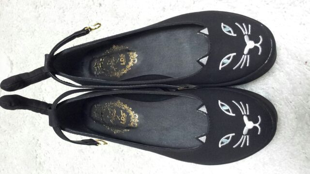

ほっほおい♪
ろってぃ-です(/〃ω〃)/ )))
今日は横浜で個別握手会が
ありましたぁ〜(´▽`)
パチパチパチィ〜 ♪
今日の私服は
こんな感じだよ ☆
どうかなあ?
前回は 黒のワンピだったから
またイメージを変えたよぉ(*・ω・)?
ふわふわで気持ちいいのん♪
写真ぢゃわかんないけど、
このワンピースね
全体にラメが付いてるの...〃□〃
きらきらきら〜☆
それで ちょっと
レースが下から出てるのん♪
靴がポイントかなっ＼(^o^)／
黒猫ちゃまw。

きゃわいい〜
靴にシッポが
ついてる ♪wow
LDSの靴だよ /
女の子ならよく知っているお店よ♪
白猫もあったよ (*^^*)
何度か
ふんころってぃ〜は
今日いないのぉ?って
聞かれたよぉ〜 ^^
んー
いつか連れてくるよっ (*´ω`*)笑
にしても、、
今日 東京が...
すごいことになってたよ (>_<)
雪つもったねぇ〜
皆大丈夫だったかな?
心配です(´・_・)泣
今まで大阪にいた時も
雪はほとんど降らなかったから
Rottyたまげた (*^^*)
家から駅まで
歩いて行くのが大変で
何度もぐねってすべったよ ><;
お気に入りの傘も
一瞬にして折れた...
チーン >┼○ 。
皆 風邪ひかないようにね(T-T)
そろそろ
質問返しようと思ってるので
気軽に何でも質問してねんっ(*^^*)
ではではっ )))
おやすみなさい...
今日も本当に
ありがとうございました(〃_〃)
皆のこと大好きだよぉ〜?
おやすみなさい (・ε・*)